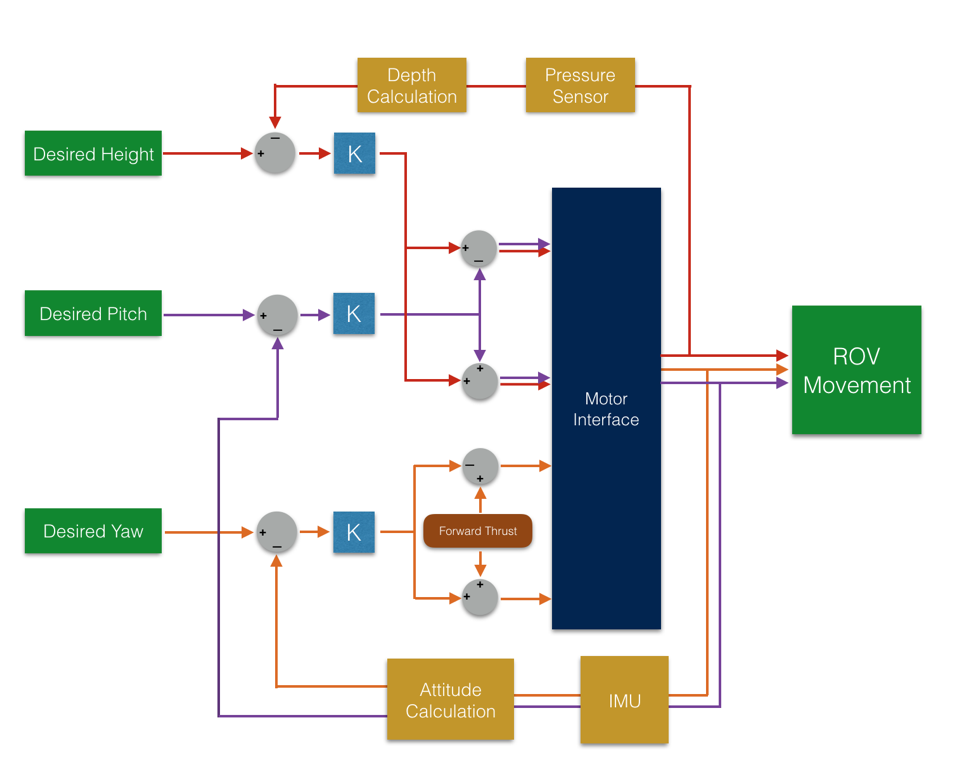

This software for this project was built on an Arduino. Hardware includes DC motors, motor controllers, a depth sensor, an IMU, and a waterproof casing
I designed and was the primary engineer for the controls algorithm. I was also in charge of writing the software interface for the IMU and attitude heading and reference system (AHRS).
Unfortunately I am not permitted to post the code for the robot publically, since there is a potential for other students to reuse code for their own project.
Here's a video of the AUV in action.
Three intertwined control feedback loops were used to control pitch, yaw, and depth. The motors were characterized experimentally to find optimal gain constants for each PID. Pitch and yaw work by offsetting the motors in opposite directions, such that the submarine will turn a certain way.
And here's a solidworks mockup